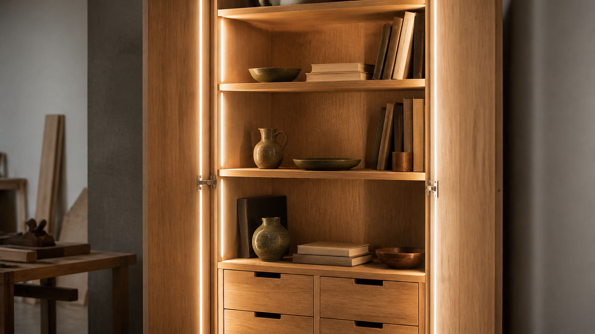

수납장 내부 조명이 가구 사용성을 바꾸는 방식

수납장은 문을 닫았을 때의 비례만으로 평가하기 쉽습니다. 그러나 실제 사용에서는 문을 열었을 때 안쪽 물건이 얼마나 잘 보이는지, 깊은 선반 끝까지 손이 자연스럽게 가는지, 밤에도 눈부심 없이 찾을 수 있는지가 품질을 크게 좌우합니다. 내부 조명은 이 지점에서 가구의 구조와 사용 경험을 연결합니다.
천장등이 밝아도 수납장 안은 어두울 수 있습니다. 사용자의 몸, 열린 문짝, 선반 앞단이 빛을 가리기 때문입니다. 특히 키가 큰 장, 깊은 팬트리, 유리문 장식장은 내부 물건이 겹쳐 보이기 쉽습니다. 조명을 가구 안으로 들이는 이유는 분위기 연출만이 아니라, 빛이 필요한 위치에 직접 도달하게 하기 위해서입니다.
빛은 선반 뒤가 아니라 물건의 앞면에 닿아야 합니다
수납장 조명에서 흔한 실수는 빛나는 선만 보이고 실제 물건은 어둡게 남는 배치입니다. 조명이 뒤쪽 벽만 밝히면 선반 앞의 손과 물건은 여전히 그림자 속에 놓일 수 있습니다. NKBA의 주방·욕실 조명 자료도 언더 캐비닛과 내부 조명에서 연속적인 조명과 위치 계획을 강조합니다. 핵심은 조명 기구가 눈에 띄는지가 아니라, 작업면과 수납물에 빛이 고르게 도달하는지입니다.
깊은 장에는 선반마다 짧은 조명을 붙이는 방법보다 앞쪽 세로선에 연속형 LED를 숨기는 방식이 더 균일하게 느껴질 때가 많습니다. 빛이 선반 전체를 비스듬히 타고 들어가면 뒤쪽 물건의 윤곽도 읽기 쉬워집니다. 반대로 점 형태의 퍽 조명은 의도한 장식장에는 어울릴 수 있지만, 간격이 넓으면 밝은 원과 어두운 틈이 번갈아 생길 수 있습니다.
색온도와 연색성은 목재와 물건의 인상을 바꿉니다
조명은 나무의 색을 그대로 보여 주지 않습니다. 낮은 색온도의 빛은 오크와 월넛을 더 따뜻하게 보이게 하고, 높은 색온도는 흰 그릇이나 금속을 더 차갑고 선명하게 보이게 할 수 있습니다. ENERGY STAR는 색온도(CCT)를 켈빈 단위로 설명하며, 2700~3000K는 더 따뜻한 흰빛, 4000K 이상은 더 차가운 흰빛으로 보인다고 정리합니다.
수납장 안에 의류, 식기, 책, 공예품처럼 색을 구분해야 하는 물건이 많다면 연색성도 봐야 합니다. 낮은 품질의 조명은 소재의 색 차이를 흐리게 만들고, 마감 색을 실제보다 탁하게 보이게 할 수 있습니다. 주거용 원목 가구에서는 지나치게 푸른 빛보다 따뜻하거나 중립적인 색온도가 목재의 촉감과 잘 맞는 경우가 많지만, 주방 작업대처럼 정확한 구분이 필요한 곳은 조금 더 중립적인 빛이 실용적일 수 있습니다.
눈부심을 줄이려면 광원을 숨기고 확산해야 합니다
조명이 밝다고 좋은 것은 아닙니다. 문을 열자마자 LED 점들이 눈에 직접 들어오면 사용자는 본능적으로 시선을 피하고, 내부 물건보다 빛 자체를 먼저 의식합니다. CCOHS의 조명 인체공학 자료는 좋은 시각 환경의 조건으로 충분한 빛, 적절한 방향, 눈부심과 과도한 대비의 제한, 그림자 감소를 함께 제시합니다.
가구 제작에서는 이를 알루미늄 채널, 반투명 디퓨저, 선반 앞쪽 턱, 문짝 안쪽의 가림선으로 해결할 수 있습니다. 광원을 완전히 노출하지 않고 빛만 표면에 퍼지게 만들면 작은 수납장도 더 차분하게 느껴집니다. 유리 선반이나 광택 있는 도장면처럼 반사가 강한 재료를 쓸 때는 조명 위치를 더 신중히 잡아야 합니다.
배선과 점검 공간은 설계 초기에 정해야 합니다
내부 조명은 나중에 붙이는 액세서리처럼 보이지만, 완성도가 높은 가구에서는 구조 설계와 함께 시작됩니다. 전선이 지나갈 홈, LED 채널이 들어갈 깊이, 드라이버와 스위치의 위치, 문을 열 때 켜지는 센서의 설치 공간을 미리 정해야 합니다. 완성 후에 급히 붙인 조명은 선이 노출되거나, 선반을 조절할 때 걸리거나, 청소와 수리를 어렵게 만들 수 있습니다.
특히 맞춤 수납장에서는 전원 접근성과 점검 가능성이 중요합니다. 조명은 언젠가 교체될 수 있는 부품이므로, 드라이버를 완전히 막힌 공간에 넣거나 선반을 모두 뜯어야만 접근할 수 있게 만드는 설계는 피해야 합니다. 좋은 디테일은 보이지 않는 것이 아니라, 필요할 때 접근할 수 있도록 정리된 것입니다.
모든 수납장에 조명이 필요한 것은 아닙니다
조명은 비용, 배선, 발열 관리, 고장 가능성을 함께 가져옵니다. 낮고 얕은 오픈 선반처럼 주변 빛만으로 충분히 보이는 가구라면 내부 조명이 과한 선택일 수 있습니다. 반대로 키 큰 장, 깊은 팬트리, 유리문 장식장, 침실 옷장, 현관 수납처럼 손이 자주 들어가고 내부가 어두운 가구라면 조명의 체감 효과가 큽니다.
따라서 조명 계획은 “있으면 고급스러워 보이는가”보다 “어떤 동작을 쉽게 만드는가”에서 출발해야 합니다. 자주 찾는 물건의 위치, 사용 시간대, 문을 여는 방향, 선반 깊이, 내부 마감 색, 전원 위치를 함께 보면 필요한 조명과 불필요한 장식을 구분할 수 있습니다.
가구의 품질은 어두운 곳에서 더 잘 드러납니다
낮에는 나무결과 문짝 비례가 먼저 보입니다. 하지만 저녁에 수납장을 열 때는 빛의 위치, 손이 닿는 깊이, 그림자의 양, 스위치의 반응이 더 직접적으로 느껴집니다. 내부 조명은 가구를 화려하게 꾸미는 장치가 아니라, 사용자가 매일 반복하는 작은 동작을 덜 불편하게 만드는 설계 요소입니다.
목간이 수납장을 볼 때도 이 기준은 유효합니다. 선반의 두께와 결구가 물건의 무게를 받는다면, 조명은 그 물건을 찾는 시간을 받쳐 줍니다. 좋은 수납장은 닫혀 있을 때 단정하고, 열렸을 때는 필요한 것이 조용히 잘 보입니다.